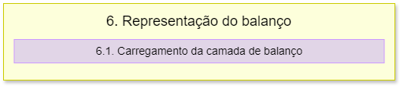

6. Representação do balanço
O fluxograma de processos desta etapa é apresentado a seguir:
As funções carregar_camada_balanco e importar_camada_balanco são o mesmo processo das funções definidas na documentação da etapa 2, nos itens 2.2 e 2.3. Isso porque as etapas estão em arquivos diferentes, então para chamar as funções é necessário repeti-las.
A única diferença é que na função carregar_camada_balanco são definidas as configurações da simbologia da camada ottobacias_isr com base nos valores únicos do campo classe_isr. As cores dos símbolos são atribuídas com base em um dicionário cores_classes e os rótulos das categorias são definidos em um dicionário rotulos_classes. Por fim, é criado um renderizador de símbolos categorizado através do QgsCategorizedSymbolRenderer, o qual é atribuído à camada ottobacias_isr.
O método triggerRepaint é chamado na camada para garantir que as alterações de simbologia sejam aplicadas e então, a função retorna a camada ottobacias_isr.
Nota
A classe QgsCategorizedSymbolRenderer é utilizada para criar um renderizador de símbolos categorizados.
Através da classe QgsRendererCategory são definidas as categorias e os símbolos.
A função limpeza_camadas_extras realiza a remoção das camadas extras do projeto no QGIS.